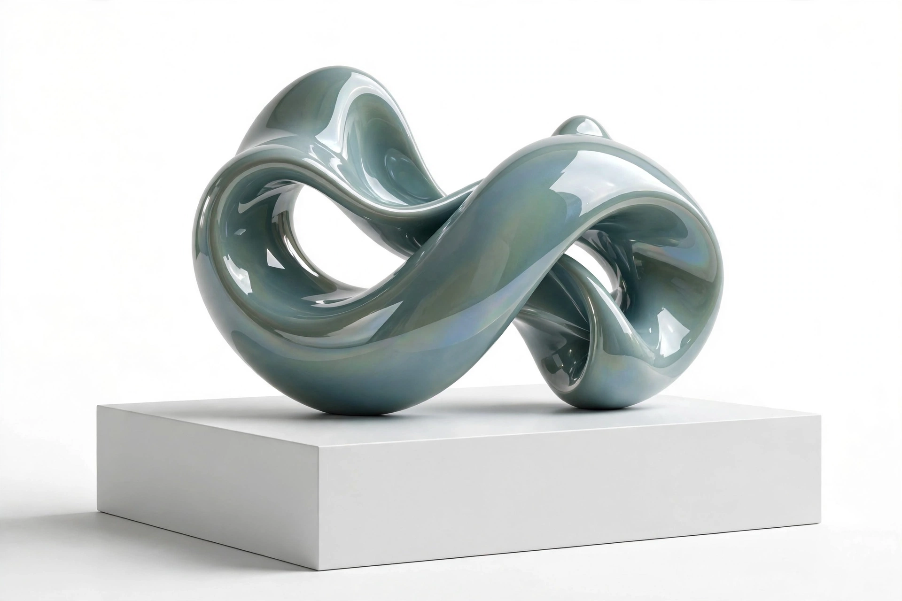

Post-Internet
Post-Internet is a loosely defined tendency in contemporary art of the late 2000s and 2010s concerned with the effects of the Internet on aesthetics and culture. The term does not mean "after the Internet" but art made in a condition where the Internet is mundane infrastructure: work is conceived online, circulated as digital images, and only sometimes materialised as objects in a gallery.

| Post-Internet | |
|---|---|
| Period | c. 2008 – 2010s |
| Associated with | Marisa Olson, Gene McHugh, Artie Vierkant, Katja Novitskova, DIS |
| Precursors | Net art, video art, new media art |
| Exhibitions | Ocean of Images (MoMA, 2015); 9th Berlin Biennale (2016) |
Origins of the term
Artist and critic Marisa Olson used "post-internet" around 2008 to describe her own practice of making art after spending time online; Gene McHugh's blog Post Internet (2009–10) developed the idea. Artie Vierkant's essay The Image Object Post-Internet (2010) argued that the artwork now exists primarily as a circulating image, with physical versions functioning almost as merchandise of the file.
Characteristics
Post-Internet work often adopts the visual language of stock photography, e-commerce, 3D rendering and social media; artists such as Katja Novitskova printed internet images of animals on aluminium cut-outs, while the collective DIS — curators of the 2016 Berlin Biennale — treated the biennial itself as a branded media platform. Critics charged the tendency with slick corporate aesthetics and market complicity, and many associated artists rejected the label even as museums adopted it.
See also
Recreated from memory as part of the muse-webcrawl project.